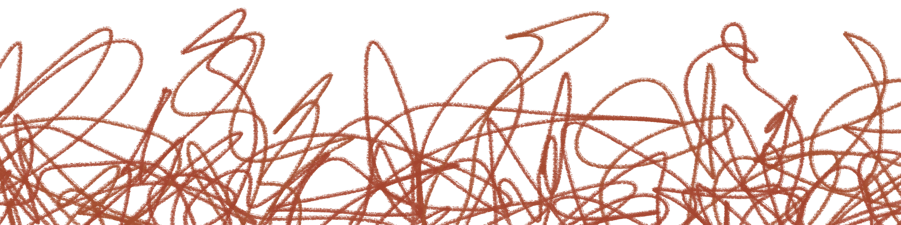

Valami egy ideig közelinek és valódinak tűnik, de végül mégsem tud megmaradni az életedben. Egyre ismerősebbé válik számodra az az érzés, hogy hiába jelenik meg valaki, aki egy rövid időre fenn tud tartani téged, előbb-utóbb úgyis kicsúszik a kezeid közül.
Lapozz a X. oldalra és a felbukkanó lehetőségek közül válassz egyet!
